HyperCubicShape¶
About the HyperCubicShape class¶
The WaveBlocks Project
@author: R. Bourquin @copyright: Copyright (C) 2010, 2011, 2012, 2013, 2014 R. Bourquin @license: Modified BSD License
Inheritance diagram¶
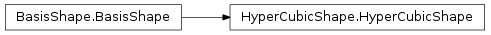
Class documentation¶
- class WaveBlocksND.HyperCubicShape(limits)¶
This class implements the hypercubic basis shape which is the full dense basis set. A basis shape is essentially all information and operations related to the set
 of multi-indices
of multi-indices  .
The hypercubic shape in
.
The hypercubic shape in  dimensions and with limit 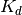
in dimension
dimensions and with limit 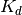
in dimension  is defined as the set
is defined as the set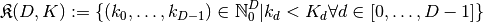
- __init__(limits)¶
Parameters: limits – The list of all limits 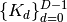
- __str__()¶
Returns: A string describing the basis shape .
- __hash__()¶
Compute a unique hash for the basis shape. In the case of hypercubic basis shapes
the basis is fully specified by its
maximal index 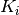 along each direction ![i \in [0,\ldots,D-1]](../_images/math/a5f66b4f058568e1a9f689b976d57513a007cc2b.png) .
.
- __getitem__(k)¶
Make map look ups.
- __iter__()¶
Implements iteration over the multi-indices
of the basis set .Note: The order of iteration is NOT fixed. If you need a special iteration scheme, use get_node_iterator().
- __contains__(k)¶
Checks if a given multi-index
is part of the basis set .Parameters: k (tuple) – The multi-index we want to test.
- contains(k)¶
Checks if a given multi-index
is part of the basis set .Parameters: k (tuple) – The multi-index we want to test.
- extend()¶
Extend the basis shape such that (at least) all neighbours of all boundary nodes are included in the extended basis shape.
- find_largest_index()¶
Find the index
 with maximal distance
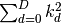 from the zero index. In case of
multiple maxima the method returns the first one found.
with maximal distance
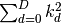 from the zero index. In case of
multiple maxima the method returns the first one found.
- get_basis_size(extended=False)¶
Returns the size 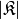 of the basis. The size is the number of distinct multi-indices
that belong to the basis
.Raise : NotImplementedError Abstract interface.
- get_description()¶
Return a description of this basis shape object. A description is a dict containing all key-value pairs necessary to reconstruct the current basis shape. A description never contains any data.
- get_dimension()¶
Returns the dimension
of the basis shape .
This is defined as the number of components each multi-index
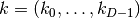 has.Raise : NotImplementedError Abstract interface.
- get_limits()¶
Returns the upper limit for all directions
.
:return: A tuple of the maximum of the multi-index in each direction.
- get_neighbours(k, selection=None, direction=None)¶
Returns a list of all multi-indices that are neighbours of a given multi-index
. A direct neighbour is defined as
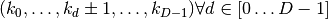.Parameters: - k (tuple) – The multi-index of which we want to get the neighbours.
- selection (string with fixed values forward, backward or all. The values all is equivalent to the value None (default).) –
- direction (int) – The direction 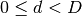 in which we want to find the neighbours 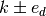.
Returns: A list containing the pairs 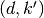.
- get_node_iterator(mode='lex', direction=None)¶
Returns an iterator to iterate over all basis elements
.Parameters: - mode (string) – The mode by which we iterate over the indices. Default is ‘lex’ for lexicographical order. Supported is also ‘chain’, for the chain-like mode, details see the manual.
- direction (integer.) – If iterating in chainmode this specifies the direction the chains go.